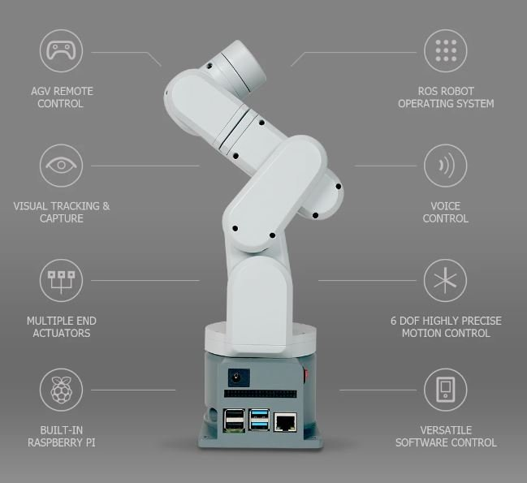
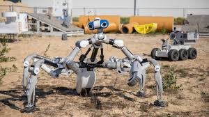

Spatial Winding: Cooperative Heterogeneous Multi-Robot System
By Rebeca Duque Estrada, Fabian Kannenberg, Hans Jakob Wagner, Maria Yablonina, Achim Menges
Introduction
This research introduces a cooperative heterogeneous multi-robot fabrication system for spatial winding of filament materials.
It leverages the capabilities of a six-axis robotic arm and a customized 2 + 2 axis CNC gantry system to create complex spatial structures.
This innovative method expands the existing design space of filament structures in architecture.

Methods
The study follows an integrated co-design methodology, blending geometry and material characteristics with robotic fabrication techniques.
The method of Spatial Winding introduces a novel approach for fabricating lightweight structures by utilizing multi-robot systems.
Coreless Filament Winding
Multi-Robot Cooperation
Digital Tool Development
Results
The experimental setup demonstrated the potential for multi-robot cooperation to fabricate large-scale fibrous structures.
Two prototypes were developed: a spatially wound table and a long-span structure, showcasing the capabilities of the fabrication system.

Discussion
The study highlights the benefits and limitations of using Spatial Winding for structural applications.
Further research is needed to optimize the system and explore additional geometric possibilities.
Conclusion
This research provides a comprehensive framework for using multi-robot systems in the fabrication of complex spatial structures.
Future research will focus on refining the methodology and expanding the potential applications of Spatial Winding.
References
Duque Estrada, R., et al. (2020). Spatial winding: cooperative heterogeneous multi-robot system for fibrous structures. Construction Robotics.
Menges, A., et al. (2015). Core-less filament winding for architectural applications.
Kayser, M., et al. (2019). Fiberbots: design and digital fabrication of tubular structures using robot swarms.

.jpeg)